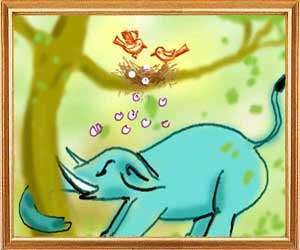
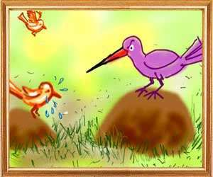
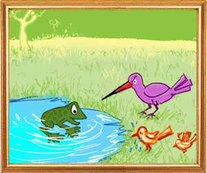
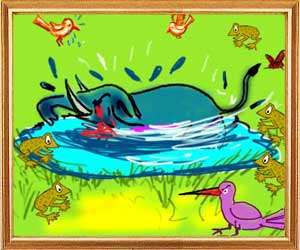

Two sparrows, husband and wife, built a nest on a banyan tree where the female sparrow laid eggs. One afternoon a wild elephant came to the tree seeking shelter from the sun. Unable to bear the heat, the tusker suddenly went berserk and snapped a big branch of the tree, crushing the sparrow's eggs in the nest. The sparrow pair somehow escaped the fury of the elephant but the wife began crying for her eggs.
A woodpecker, a close friend of the sparrow, heard her crying and moved by her grief asked her, “Why are you crying, my friend? Wise men do not grieve what is lost or what is dead or what is past. That is the difference between a learned person and an unlettered man.” The female sparrow said, “The wicked elephant has destroyed my off spring. If you are a true friend of mine suggest a way to kill him. In my view, he who harms a person in trouble or he who ridicules a person in sorrow deserves to be punished and he who punishes such a person has no rebirth.”
“What you say is right,” said the woodpecker. “He is a friend who comes to your aid when you are in need. Everyone tries to be friendly when you are prospering. You will see how resourceful I am. I have a friend who is a fly. With his help we can kill the elephant.” Taking the female sparrow with him, the woodpecker called on the fly and told him, “This is my dearest friend. A wild elephant has squashed her eggs. You must somehow find a way to kill that elephant. We need your help.” The fly said, “I have a friend who is a frog. Let us go to him and seek his help also.” The female sparrow, the woodpecker and the fly went to the frog and narrated the entire story of the sparrow's grief.
The frog said, “What is an elephant before a united crowd like us? Do as I tell you. O' fly, go to the elephant when the sun is high in the sky and hum a sweet tune into his ears. When he closes his eyes in ecstasy, the woodpecker will scoop his eyes out. He becomes blind and thirsty and will look for water. I will go to a quicksand and begin croaking there. Thinking that there is water, the elephant will come there and sink into the quicksand and die.” All the four played out their roles according to the frog's plan and caused the death of the elephant.” At the end of the story, the female pheasant told her husband, “That is how together the four friends killed the elephant.”
Impressed by his wife's wisdom, the husband said, “Okay, we will call our friends and with their help crush the Sea.' As their friends, the cranes, the peacocks, the cuckoos and other birds, gathered, the male pheasant told them the story of how the Sea had killed their offspring and how necessary it was to drain him out. At the end, he said, “We cannot do this job. Let us go to Garuda, Lord Vishnu's vehicle, and tell him all that has happened. He will be angry over what the Sea has done to his species. He will surely take revenge on the Sea.”
Wailing and weeping, all the birds went to meet Garuda and told him, “O lord, we need your help. The Sea has destroyed the eggs of the pheasant pair. This is a blow to all the bird community. If you do not intervene, he will destroy our entire tribe. Wise men have always said that one wicked person will be an inspiration to all others with evil intentions.” Moved by their story of grief, Garuda thought to himself, “These birds have a legitimate grievance. I will go and punish the Sea.' Meanwhile, an envoy from Lord Vishnu came and told Garuda that the Lord had sent him as He wanted to travel to Amaravathi on a divine mission. The envoy asked Garuda to accompany him at once.
Garuda told the envoy, “No, I cannot come. I am not a useful servant. Let him take someone else. Please convey my regards to the Lord.” Surprised at Garuda's words, the envoy said, “O Garuda, you have never uttered such words about the Lord. Did the Lord slight you in any manner? Let me know.” “See, this Sea, the Lord's habitat, has swallowed the eggs of the pheasant pair. If the Lord does not punish the Sea for this, I shall not serve Him. This is my decision and you may convey this to the Lord,” said Garuda. Informed of Garuda's pique, Vishnu told himself, “Garuda has reason to be annoyed with me. I shall go myself and receive him with respect. If the king is satisfied he can give only money. But when the master honours his servant, the servant is ready to sacrifice his life for the sake of the master. Therefore, it is wise that I should visit and appease him.”
When Vishnu arrived to meet him, Garuda felt guilty that he had said harsh words about the Lord and said, “O Lord, the Sea who enjoys your protection has stolen the eggs of my servants and thus insulted me. Because of respect for you, I delayed taking action against him.” “True, learned men say that a master is responsible for the misdeeds of his servants. Such misdeeds hurt the master more than the servant. Come with me. I shall recover those eggs from the Sea and make the pheasant pair happy again. Later we will go to Amaravathi,” said Lord Vishnu.
The Lord then took out his thunderbolt and aiming it at the Sea warned him, “You wicked man, return the eggs to the bird pair. Otherwise, I will turn the sea into a desert.” Frightened, the Sea returned the eggs to the pheasants. The male bird handed them to his wife.